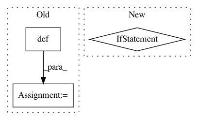

73fad9d06454d7942279475999923af4337edca7,google/datalab/contrib/bigquery/operators/_bq_extract_operator.py,ExtractOperator,execute,#ExtractOperator#Any#,30
Before Change
def execute(self, context):
if self._table:
pydatalab_context = google.datalab.Context.default()
source_table = google.datalab.bigquery.Table(self._table, context=pydatalab_context)
job = source_table.extract(
self._path, format="CSV" if self._format == "csv" else "NEWLINE_DELIMITED_JSON",
csv_delimiter=self._csv_options.get("delimiter"),
After Change
self._csv_options = csv_options or {}
def execute(self, context):
if not self._table:
task_instance = context["task_instance"]
// If the table is not specified, we fetch it from the output of the execute task, i.e. the
// query results table. This could either be a permanent table or a temporary table. If we"re
// here, it is most likely a temporary table. If it was a permanent one, it would have been
// passed in as a param and we wouldn"t be here.
// TODO(rajivpb): Assert that if we"re here, then the table is a temporary one.
// TODO(rajivpb):
// The task id of the execute task is created by concatenating "bq_pipeline_execute_task"
// and "_id". This is currently being hard-coded, but consider making this a parameter.
// It could require substantial changes to the underlying object model of Pipeline.
execute_task_output = task_instance.xcom_pull(task_ids="bq_pipeline_execute_task_id")
self._table = execute_task_output.get("table")
source_table = google.datalab.bigquery.Table(self._table, context=None)
job = source_table.extract(
self._path, format="CSV" if self._format == "csv" else "NEWLINE_DELIMITED_JSON",
csv_delimiter=self._csv_options.get("delimiter"),
In pattern: SUPERPATTERN
Frequency: 3
Non-data size: 3
Instances
Project Name: googledatalab/pydatalab
Commit Name: 73fad9d06454d7942279475999923af4337edca7
Time: 2017-10-26
Author: 4618540+rajivpb@users.noreply.github.com
File Name: google/datalab/contrib/bigquery/operators/_bq_extract_operator.py
Class Name: ExtractOperator
Method Name: execute
Project Name: pantsbuild/pants
Commit Name: 80b9759538f3bbe3bf841cbe81b327519ca08ced
Time: 2014-12-03
Author: wickman@apache.org
File Name: src/python/pants/backend/python/resolver.py
Class Name:
Method Name: resolve_multi
Project Name: HyperGAN/HyperGAN
Commit Name: 18f8e6152da9ccfdd667f3bb71d7f25fa9fc2626
Time: 2017-06-05
Author: mikkel@255bits.com
File Name: tests/gan_test.py
Class Name:
Method Name: